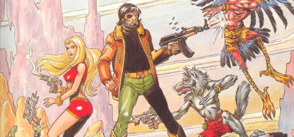

A themed poster series celebrating the art of Massimo Belardinelli across six key series.
Art by Massimo Belardinelli
| Series | Parts | Pages | w indicates a wraparound coverCovers | Year(s) | Issues | Writer | Artist | Colourist | Letterer |
|---|---|---|---|---|---|---|---|---|---|
Linked to Judge DreddJudge Dredd | 1 | 1 | 0 | 1989 | 652 | n/a | Massimo Belardinelli | <-- | n/a |
Linked to InfernoInferno | 1 | 1 | 0 | 1989 | 653 | n/a | Massimo Belardinelli | <-- | n/a |
Linked to Meltdown ManMeltdown Man | 1 | 1 | 0 | 1989 | 654 | n/a | Massimo Belardinelli | <-- | n/a |
Linked to Ace Trucking Co.Ace Trucking Co. | 1 | 1 | 0 | 1989 | 658 | n/a | Massimo Belardinelli | <-- | n/a |
Linked to Mean TeamMean Team | 1 | 1 | 0 | 1990 | 660 | n/a | Massimo Belardinelli | <-- | n/a |
Linked to Moon RunnersMoon Runners | 1 | 1 | 0 | 1990 | 661 | n/a | Massimo Belardinelli | <-- | n/a |
| year | episodes | pages |
| 1979 | 0 | 0 |
| 1980 | 0 | 0 |
| 1981 | 0 | 0 |
| 1982 | 0 | 0 |
| 1983 | 0 | 0 |
| 1984 | 0 | 0 |
| 1985 | 0 | 0 |
| 1986 | 0 | 0 |
| 1987 | 0 | 0 |
| 1988 | 0 | 0 |
| 1989 | 4 | 4 |
| 1990 | 2 | 2 |
| 1991 | 0 | 0 |
| 1992 | 0 | 0 |
| 1993 | 0 | 0 |
| 1994 | 0 | 0 |
| 1995 | 0 | 0 |
| 1996 | 0 | 0 |
| 1997 | 0 | 0 |
| 1998 | 0 | 0 |
| 1999 | 0 | 0 |
| 2000 | 0 | 0 |